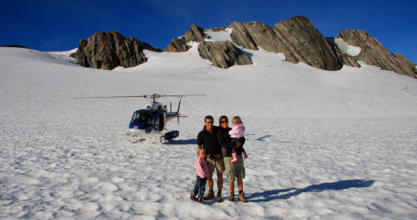
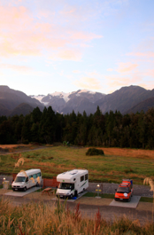
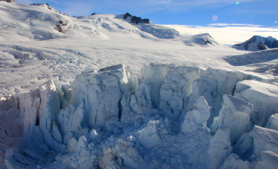
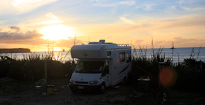

Franz Josef glacier

På helikoptertur til himmerige
torsdag den 7. februar 2008

Camilla og jeg sover bagerst i vores camper. Lige op af den store bagrude. Derfor forsøger vi også såvidt muligt at parkere med den bedste udsigt bag os.

Her er det med direkte kig op til bjergene og den store gletcher, så vi lader gardinet blive oppe. Jeg vågner kl. 6 ved at det første lys rammer sneen på toppen, og det tegner til at blive en flot solopgang over bjergene. jeg lister i et par shorts, og tager kameraet under armen for at tage et par morgenbilleder. Det er koldt på en behagelig måde. Himmelen er blå med lyserøde skyer og det tegner til at blive en smuk dag. Om et par timer står vi forhåbentlig helt oppe på toppen.
Efter det sædvanlige morgenritual med forskellige former for havregryn og -grød, kører vi ind til byen og parkerer. Vi tjekker ind sammen med alle dem, der skal op og vandre på isen med steigeisere og isøkser. Den tur må vi gemme til næste gang. Lidt i 9, bliver vi ført over vejen og direkte ind igennem et stykke regnskov, for at komme ud til en lysning, hvor vores helikopter holder klar. Solen skinner flot deroppe, og vi glæder os alle fire.

Turen derop er meget smuk. Vi flyver helt lavt henover isen og kan kigge ned i gletcherspalterne. Efter 10 minutters flyvning lander vi helt alene oppe på toppen, på et stort plateau af is og sne. Vi hopper ud, og stopper bjergtaget op mens vi nyder synet. Her er virkelig flot. Både Camilla og jeg tænker straks på skiferie og skiløb, mens pigerne går i gang med at smage på varen.
Man kunne sagtens bliver heroppe hele dagen, og gå rundt, men vi har ca. 10 minutter til at kaste med snebolde og tage billeder. Vores pilot hedder Douglas og han er frisk på at give den lidt gas på vejen ned, så vi får den store rutsjebanetur, hvilket pigerne synes er helt fedt.
Efter sammenlagt en halv time er vi tilbage i varmen igen. Men vi har mærket isen og haft sne i hænderne - skønt!

Vi har lige en træsko vi skal have hentet, så turen bliver lidt længere end planlagt, men sidst på eftermiddagen når vi frem til en meget lille men utrolig hyggelig campingplads i Rapahoe, hvor vi bogstaveligt holder med bagenden ude på stranden. Det er virkelig varmt og vi hopper i badetøjet, og når en tur i bølgerne inden aftensmaden.
Det er ikke så tit at man på en og samme dag både er i regnskoven, er omgivet af vinterlandskab og is, og er ude og bade i havet.
/Tim
Så er vi landet på isen. Vi er helt alene heroppe, og her er virkelig smukt. men meget surrealistisk at man for 10 minutter siden stod nede i varmen.